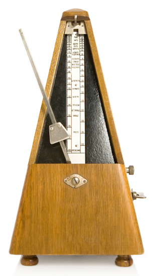
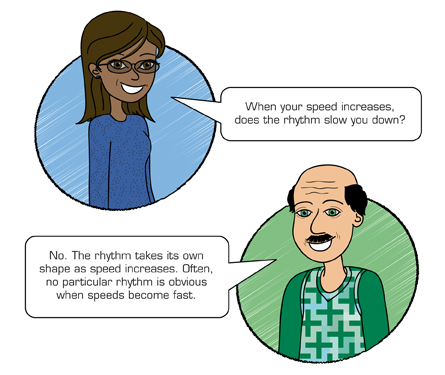

© zerra/shutterstock
This training session will take you approximately 30 minutes.
The speed at which you type comes with practice—and lots of it. In this session you will learn some tips that will help you develop your touch typing speed.
It’s good to type with a rhythm when learning how to type. Some people find that using a metronome helps keep them in rhythm. Teachers will often pace students through beginning exercises to help them establish a rhythm. If you are working alone, you can maintain a rhythm by pacing yourself. Say each letter to yourself as you strike it, keeping a definite rhythm or timing.
Rhythm helps improve accuracy.
